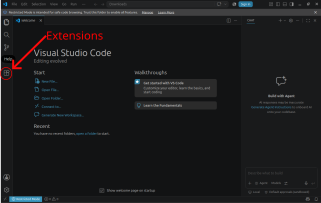
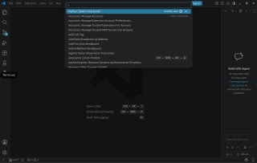
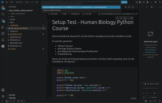

Welcome to the Python course Data Science in Human Biology.
In this course, we use Python to analyze, visualize, and scientifically evaluate biological data.
We work with:
The installation only needs to be performed once before the practical course starts.
Please follow all steps in the order given.
After successful installation, your workflow will look like this:
GitHub Repository
|
↓
Visual Studio Code
|
↓
Python Umgebung (`.venv`)
|
↓
+----------------+
| |
VS Code JupyterLab
| |
+----------------+
|
↓
DatenanalyseYou need:
☑ Computer running Windows, macOS, or Linux
☑ Internet connection
The following software will be installed:
☑ Visual Studio Code
☑ Git
☑ uv
☑ Required VS Code extensions
The Python version and all Python packages are automatically managed
by uv.
Download Visual Studio Code:
Install VS Code using the default settings.
Open VS Code once after installation to make sure it works correctly.
Git is required to download the course materials and update them later.
Download Git:
Install Git using the default settings.
Open a terminal.
Open:
Start Menu → PowerShellOpen:
Applications → Utilities → TerminalÖffne dein Terminal.
Gib ein:
git --versionYou should see output similar to:
git version 2.x.xIf a version number appears, Git has been installed successfully.
uv manages the complete Python environment for this course.
It:
Open PowerShell:
winget install --id=astral-sh.uvOpen a terminal:
curl -LsSf https://astral.sh/uv/install.sh | shIf curl is missing on Linux:
sudo apt install curl -yClose the terminal completely and open a new terminal.
Test the installation:
uv --versionBeispiel:
uv 0.x.xOpen VS Code.
Click the “Extensions” icon on the left:

Install the following extensions:
| Extension | Publisher | Extension ID (Search for) | Purpose |
|---|---|---|---|
| Python | Microsoft | ms-python.python |
Python-Unterstützung, Interpreter auswählen, Ausführen von Python-Code |
| Jupyter | Microsoft | ms-toolsai.jupyter |
Öffnen und Ausführen von Jupyter Notebooks
(.ipynb) |
| Data Wrangler | Microsoft | ms-toolsai.datawrangler |
Interaktive Untersuchung und Aufbereitung von Datensätzen |
| Ruff | Astral Software | charliermarsh.ruff |
Automatische Code-Analyse und Formatierung |
Open a terminal.
Navigate to the location where you want to store the course materials.
Example:
cd DocumentsDownload the repository:
git clone https://github.com/MarcoMernberger/data_science_human_biology.gitChange into the course directory:
cd data_science_human_biologyCheck the contents:
Linux or macOS:
ls -alWindows:
dirYou should see files and folders including:
README.md
pyproject.toml
uv.lock
notebooks
dataInside the course directory, run:
uv syncThis command:
The first installation may take several minutes.
After successful installation, a new folder exists:
.venvThis folder contains your course environment.
Please do not delete or modify this folder.
In the terminal:
code .Alternatively:
File → Open Folderdata_science_human_biologyVS Code needs to know which Python version should be used.
Press:
Ctrl + Shift + PCmd + Shift + PSearch for:
Python: Select InterpreterSelect:
Python 3.13 (`.venv`)or the interpreter located inside:
.venv
Depending on the number of installed extensions and available resources, VS Code can use a considerable amount of system resources.
If VS Code runs slowly on your computer, the course can also be completed directly using JupyterLab.
JupyterLab runs in your web browser and requires fewer resources than a full development environment.
Open a terminal inside the course directory:
uv run jupyter labA browser window with JupyterLab will open automatically.
If no browser opens automatically, copy the displayed URL into your browser.
Example:
In the terminal press:
Ctrl + C
Open:
notebooks/00_setup_test.ipynbIn the upper right corner of the notebook:
Select the kernel:
Python (`.venv`)
Then click:
Run AllThe notebook should run without errors.
At the end, a green success message should appear and the test plot should be visible.
If you can see the plot:
🎉 Your Python environment has been successfully configured.
The course exercises are provided as files with the extension:
.ipynbThese files can be opened directly in VS Code.
Code can be executed using the ▶ button.
If new or updated materials are provided:
Open a terminal inside the course directory and run:
git pullThe course environment is centrally managed using pyproject.toml and uv.lock.
If new Python packages are added to the course, they will be provided through the course repository.
After updating the course materials:
git pull
uv syncIf you later want to install additional packages, use:
uv add <package>This automatically updates pyproject.toml und uv.lock.
If you develop your own project and want to share it with others, both files must be included:
pyproject.toml
uv.lockPlease do not use:
pip install <package>The course environment is managed automatically through:
pyproject.tomland
uv.lockManual installations may cause compatibility problems.
The folder:
.venvcontains your personal Python environment for this course.
Open the Command Palette:
Windows/Linux:
Ctrl + Shift + PmacOS:
Cmd + Shift + PSSelect:
Python: Select Interpreterand choose:
.venvTry first:
uv syncuand restart VS Code.
If the problem persists, note:
Operating system:
The command you executed
The complete error message
Before the course starts, the following should be completed:
☑ VS Code installed
☑ Git installed
☑ uv installed
☑ Python VS Code extension installed
☑ Jupyter VS Code extension installed
☑ Course repository downloaded
☑ uv sync completed successfully
☑ VS Code and JupyterLab started once
☑ Test notebook executed successfully
You are now ready for the course!